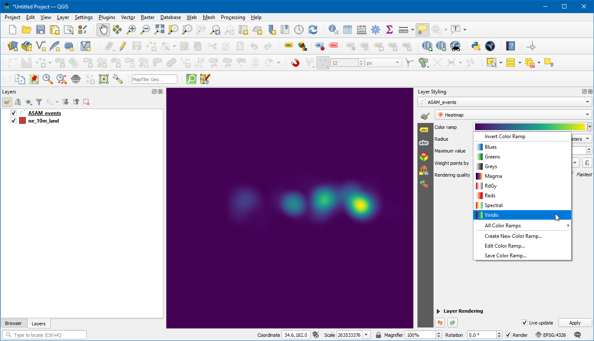
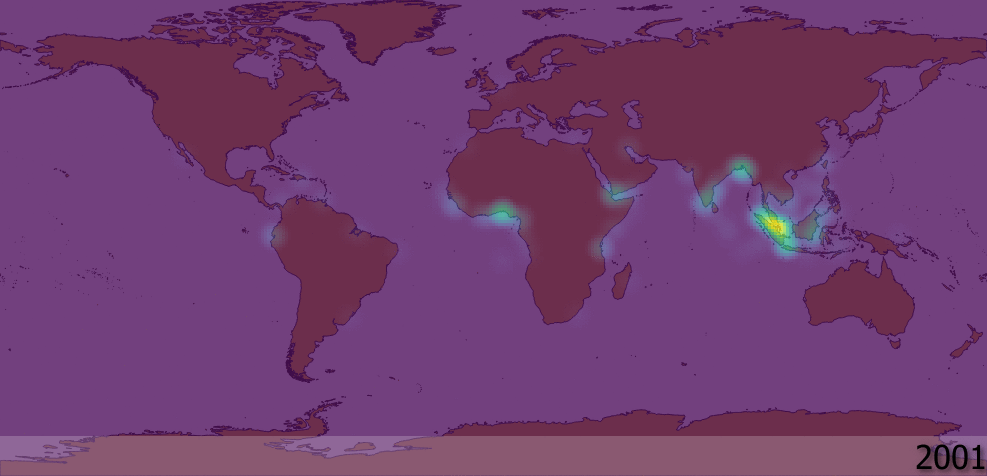

Ujaval Gandhi
Ujaval GandhiAnimar Datos de Series de Tiempo (QGIS3)¶
El tiempo es un componente importante de muchos conjuntos de datos espaciales. Junto con la información de localización, el tiempo proporciona otra dimensión para el análisis y la visualización de los datos. Si trabaja con un conjunto de datos que contiene marcas de tiempo o tiene observaciones registradas en múltiples pasos temporales, puede visualizarlo fácilmente utilizando el controlador temporal. El controlador temporal le permite ver y exportar “trozos” de datos entre determinados intervalos de tiempo que pueden combinarse en animaciones.
Nota
Temporal Controller está disponible desde QGIS 3.14 en adelante. Para versiones más antiguas de QGIS, el complemento Time Manager provee una funcionalidad similar.
Vista general de la tarea¶
Tomaremos una capa de punto de incidentes de piratería marítima, crearemos una visualización de mapa de calor y crearemos una animación de como han cambiado los puntos calientes de piratería a lo largo de las pasadas 2 décadas.
Otras habilidades que aprenderá¶
Usar el representador Mapa de Calor (Heatmap) para una visualización rápida de datos densos en puntos
Crear y usar proyecciones personalizadas de mapa
Obtener los datos¶
El portal Maritime Safety Information portal de la National Geospatial-Intelligence Agency ofrece un archivo shape de todos los incidentes de piratería marítima en forma de Anti-shipping Activity Messages. Descargue la versión Arc Shape file de la base de datos.
Natural Earth tiene varioas capas vectoriales. Descargue 10m Physical Vectors - Land que contiene poligonos de Tierra.
Para su comodidad, puede descargar directamente una copia de las capas mencionadas previamente de aquí abajo:
Fuente de Datos: [NGA_MSI] [NATURALEARTH]
Procedimiento¶
En el panel QGIS Explorador, ubique el directorio donde guardó sus datos descargados. Expanda
ne_10m_land.zipy seleccione la capane_10m_land.shp. Arrastre la capa a la pantalla. A continuación, localice el archivoASAM_shp.zip. Expándala y seleccione la capaasam_data_download/ASAM_events.shpy arrástrela a la pantalla.

Una vez que esté cargada la capa, puede ver los puntos individuales que representan ubicaciones de incidentes de piratería. Hay miles de incidentes y es difícil determinar donde hay más piratería. En vez de puntos individuales, una mejor manera de visualizar estos datos es a través de mapa de calor. Seleccione las capas
ASAM_eventsy clic en el botón Abrir el Panel de Estilo de la capa en el panel Capas. Clic en el menú desplegableSímbolo único.
En el menú desplegable de selección del representador, seleccione el representador
Heatmap. A continuación, seleccione la rampa de colorViridisdel selector Rampa de color.

Ajuste el valor Radio a
5.0. Abajo, expanda la sección Representación de Capa y ajuste la Opacidad a75.0%. Esto da un agradable efecto visual de los puntos calientes con la capa de tierra abajo.

Ahora animemos estos datos para mostrar el mapa anual de incidentes de piratería. Clic derecho en la capa
ASAM_event, y elijaPropiedades.

En la caja de diálogo Propiedades de Capa, seleccione la pestaña Temporal y habilítela haciendo clic en la casilla de verificación.

Los datos fuente contienen un atributo
dateofocc- que representa la fecha en la que tuvo lugar el incidente. Este es el campo que será usado para determinar los puntos que son representados para cada periodo de tiempo. SeleccioneCampo Único con Fecha/Horaen el menú desplegable Configuración,dateofocccomo Campo.

Ahora aparecerá un símbolo de reloj junto al nombre de la capa. Clic en el
Panel de Control Temporal(icono Reloj) de la Barra de Herramientas Navegación de Mapa.

Clic en la
Navegación Temporal Animada(icono reproducir) para activar los controles de animación. Clic el Definir a Rango Completo (icono refrescar) junto a Rango para definir automáticamente el rango de tiempo para coincidir con el conjunto de datos.

Ahora está listo para previsualizar la animación. Defina el Paso como
1 Añoluego Clic en el botón Reproducir para comenzar la animación.

Nota
Si la animación fuera demasiado rápida, puede ajustar la tasa de cuadro haciendo clic en Configuración Temporal (icono engranaje amarillo) en la esquina superior derecha del panel Controlador Temporal. Reduciendo la tasa de cuadros (cuadros por segundo) desacelerará la animación.
Sería útil también mostrar una etiqueta que muestre el cuadro de tiempo actual en el mapa. Podemos hacer eso usando la ilustración incorporada Título. Vaya a .

Clic la casilla de verificación para habilitarla y clic el botón
Insertar una Expresióne ingrese la siguiente expresión para mostrar el año. Aquí la variable@map_start_timecontiene la marca de tiempo de la porción de tiempo actual que se muestra. Entonces podemos usar esa marca de tiempo y formatearla para mostrar el año de ocurrencia. Vea la Documentación QGIS para detalles sobre varias opciones de formateo aceptadas para la marca de tiempo.
format_date(@map_start_time, 'yyyy')
Seleccione tamaño de fuente como
25, defina barra de color de fondo comoWhitey defina la transparencia a50%. En Ubicación elijaAbajo derecha. Ahora clic Aceptar.

Una vez que los parámetros estén definidos respectivamente, el año se mostrará como se ve. Para exportar estas como imágenes y convertirlas como GIF seleccione
Exportar Animación(icono guardar) en la ventana de control Temporal.

Clic en
...Directorio de salida para elegir el directorio donde se guardarán las imágenes.

Bajo la Extensión seleccione la capa . Clic guardar

Una vez que termine la exportación, verá imágenes PNG para cada año (total 18 imágenes) en el directorio de salida.

Ahora creemos un GIF animado a partir de estas imágenes. Hay varias opciones para crear animaciones a partir de cuadros imágenes individuales. Me gusta ezgif como herramienta fácil y en-línea. Visite el sitio y clic Escoger Archivos y seleccione todos los archivos .png. Una vez seleccionados, clic el botón Subir y hacer un GIF!. Una vez creado, usted puede descargar el GIF usando el botón Guardar.

If you want to give feedback or share your experience with this tutorial, please comment below. (requires GitHub account)